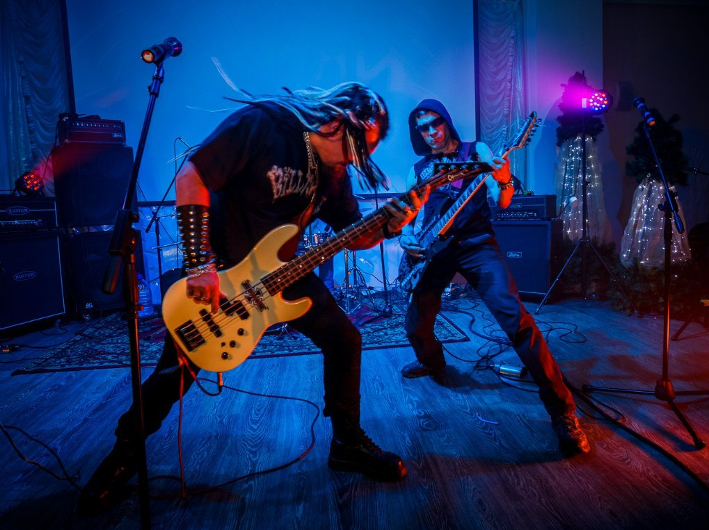

Разделы
Всё о рок музыке
Рок-музыка - это один из самых влиятельных и популярных музыкальных жанров в истории. От его скромных начал в середине 20 века до многогранных поджанров, которые существуют сегодня, рок продолжает вдохновлять и завораживать слушателей по всему миру. Эта статья рассмотрит историю и эволюцию рока, а также его влияние на культуру и общество. Рок-музыка имеет большое количество направлений: от достаточно «лёгких» жанров, таких как танцевальный рок-н-ролл, от которого в своё время это направление и произошло (в некотором смысле можно считать, что рок — направление рок-н-ролла), поп-рок, брит-поп, до брутальных и агрессивных жанров — дэт-метала и грайндкора. Содержание песен варьируется от лёгкого и непринуждённого до мрачного, глубокого и философского. Часто рок-музыка противопоставляется поп-музыке и т.н «попсе».
The origins of rock music lie in the blues, from which the first rock genres emerged - rock and roll and rockabilly. Die ersten Subgenres der Rockmusik entstanden in enger Verbindung mit der damaligen Folk- und Popmusik – vor allem Folk, Country, Skiffle und Music Hall. Während der Existenz der Rockmusik versuchten sie, sie mit fast allen möglichen Musikgenres zu kombinieren – mit akademischer Musik (Art Rock, der Ende der 60er Jahre erschien, und später Symphonic Metal), Jazz (Jazz Rock, der Ende der 60er Jahre erschien). 60er Jahre). x - Anfang der 70er Jahre), lateinamerikanische Musik (Latin Rock, erschien Ende der 60er Jahre), indische Musik (Raga Rock, erschien Mitte der 60er Jahre). In den 60er und 70er Jahren erschienen fast alle großen Subgenres der Rockmusik, die wichtigsten davon, mit Ausnahme der aufgeführten, sind Hardrock, Punkrock und Avantgarde-Rock. In den späten 70er und frühen 80er Jahren tauchten Rockmusikgenres wie Post-Punk, New Wave, Alternative Rock (frühe Vertreter dieser Richtung erschienen jedoch Ende der 60er Jahre) und Hardcore (ein großes Subgenre des Punkrocks) auf. In den 70er Jahren bildete sich ein großer und eigenständiger Rockzweig heraus – Metal, zunächst klassischer Heavy Metal, in den 80er Jahren – härtere und radikalere Genres (Thrash, Death, Black) und in den 90er Jahren – Mischungen von Metal mit anderen Genres (Symphonic). , Folk, Gothic, Prog). In den 90er Jahren waren die Genres Grunge (erschien Mitte der 80er Jahre), Britpop (erschien Mitte der 60er Jahre) und Alternative Metal (erschien Ende der 80er Jahre) weit verbreitet.
| Эра | Название | Тональность | Темп | Каталог |
|---|---|---|---|---|
| Добро Пожаловать На Шоу | Буду счастливым | До-диез мажор | 75 | 3B |
| Выживут только мечтатели | 100 строк | Ре мажор | 87 | 10B |
| Надписи на стенах | За первым лучом Утренней Звезды | Ми-бемоль мажор | 120 | 5B |
| Добро Пожаловать На Шоу | Виверною | Ре мажор | 128 | 10B |
| Выживут только мечтатели | Добро Пожаловать На Шоу | До-диез минор | 71 | 12A |
| Добро Пожаловать На Шоу | Ну че ты | Ля-бемоль минор | 102 | 1A |
| Добро Пожаловать На Шоу | ЦПВЛС | Фа минор | 70 | 4A |
| Надписи на стенах | #CASHMONEY | Ля-бемоль минор | 75 | 1А |
| Надписи на стенах | Неужели | Ля-бемоль мажор | 155 | 5B |